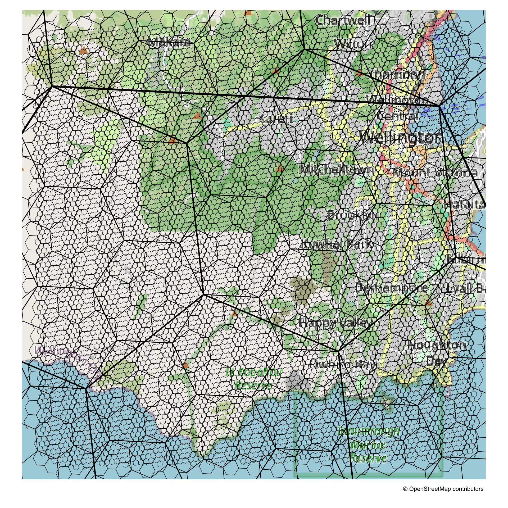

Code
library(dplyr)
library(h3forr)
library(tmap)
library(sf)
library(ggplot2)
library(stringr)6 sides, 6 angles, and 6 vertices.
Wishing to use a static web basemap increased the degree of difficulty here.
Having said that, tmap’s built in tm_basemap() function seems promising and intuitive.
A bit of hunting around suggests that the ggspatial package’s annotation_map_tile() function is the best for basemaps in ggplot2.
library(dplyr)
library(h3forr)
library(tmap)
library(sf)
library(ggplot2)
library(stringr)square <- c(1.74e6 + 1e4 * c(0, 0, 1, 1, 0),
5.42e6 + 1e4 * c(0, 1, 1, 0, 0)) %>%
matrix(ncol = 2) %>%
list() %>%
st_polygon() %>%
st_sfc() %>%
st_sf(crs = 2193) %>%
st_transform(4326)
get_hexes <- function(poly, resolution, distance) {
poly %>%
st_buffer(distance) %>%
polyfill(res = resolution) %>%
h3_to_geo_boundary() %>%
geo_boundary_to_sf()
}
h3_5 <- get_hexes(square, 5, 5000) %>%
st_cast("LINESTRING")
h3_6 <- get_hexes(square, 6, 2500) %>%
st_cast("LINESTRING")
h3_7 <- get_hexes(square, 7, 1500) %>%
st_cast("LINESTRING")
h3_8 <- get_hexes(square, 8, 1000) %>%
st_cast("LINESTRING")
h3_9 <- get_hexes(square, 9, 750) %>%
st_cast("LINESTRING")
h3_10 <- get_hexes(square, 10, 500) %>%
st_cast("LINESTRING")
bb <- h3_10 %>%
st_union() %>%
st_bbox()
credit <- maptiles::get_credit("OpenStreetMap")tmaptmap v4 has a built-in web basemap function. The raster downscaling kicks in to make the image a bit unsatisfactory, but I assume that option will be tweakable in due course.
tm_basemap(server = "OpenStreetMap", zoom = 12) +
tm_shape(h3_5) +
tm_lines(lwd = 3.5) +
tm_shape(h3_6) +
tm_lines(lwd = 2.5) +
tm_shape(h3_7) +
tm_lines(lwd = 1.5) +
tm_shape(h3_8) +
tm_lines(lwd = 1) +
tm_shape(h3_9) +
tm_lines(lwd = 0.7) +
tm_shape(h3_10, is.main = TRUE) +
tm_lines(lwd = 0.5) +
tm_credits(
credit,
position = tm_pos_out(pos.h = "RIGHT", pos.v = "TOP",
cell.h = "center", cell.v = "bottom")) +
tm_layout(frame = FALSE)
ggplot2ggspatial seems the best option for a static background basemap.
library(ggspatial)
ggplot(square, aes(colour = "#00000000")) +
annotation_map_tile(zoomin = 1) +
geom_sf(data = h3_5, linewidth = 1, colour = "black") +
geom_sf(data = h3_6, linewidth = 0.75, colour = "black") +
geom_sf(data = h3_7, linewidth = 0.6, colour = "black") +
geom_sf(data = h3_8, linewidth = 0.45, colour = "black") +
geom_sf(data = h3_9, linewidth = 0.35, colour = "black") +
geom_sf(data = h3_10, linewidth = 0.25, colour = "black") +
xlim(bb[1], bb[3]) +
ylim(bb[2], bb[4]) +
theme_void()